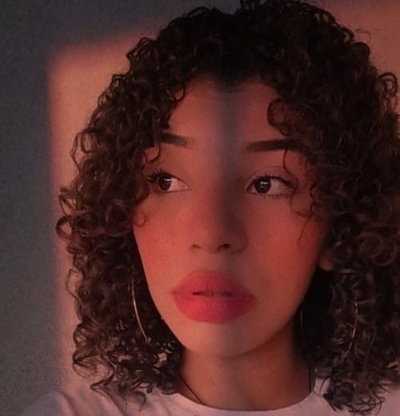

Sobre
- Nascida em 2000. Interessada em Maquiagem desde Sempre.
- Técnico de Nível Médio em Manutenção e Suporte em Informática pela Escola Estadual Juscelino Kubitschek (EEJK) Assú.
- Com Conhecimentos em Organização de Eventos, Bem como o "I Simpósio da EEJK na área de informática" e a "Exposição de Empreendedorismo na Feira da Lua, Feira de Negócios na Praça São João Batista".
- Entusiasta na Área de MakeUp, com Habilidades em Vendas e Apresentações, Empreendedorismo e Manutenção de Hardware. com Ambição de Formar-se em Psicologia na Universidade Federal.